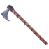
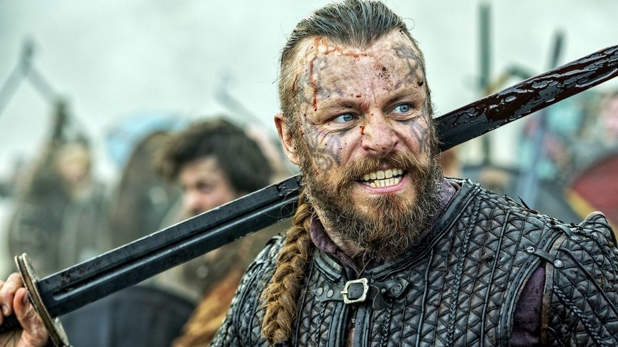
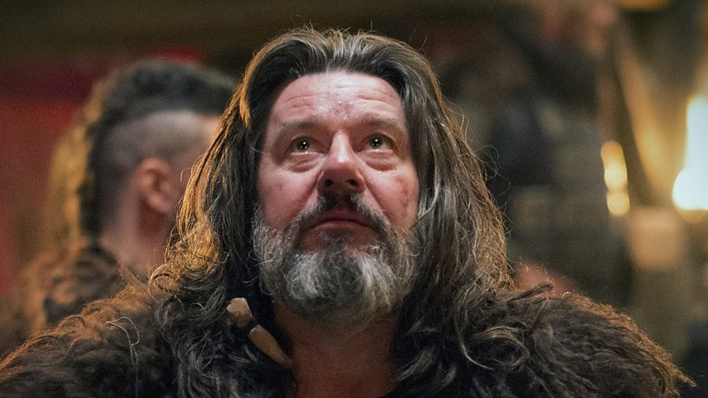

Епоха вікінгів
Епоха вікінгів
Вікінги
Ві́кінги (від давньоскан. vikingr, «пірат») — у VIII—XI століттях воїни-мореплавці зі Скандинавії. Справили значний вплив на хід європейської історії. Займалися розбоєм і торгівлею в Європі, Західній Азії та Північній Африці. Протягом IX—XI століть колонізували значні регіони Європи: Східну Англію, Нормандію, Ісландію, Фарерські та Шетландські острови, Сицилію, Русь тощо. Складалися, переважно, з данців, норвежців і шведів. Первісно сповідували скандинавське язичництво; протягом Х—ХІ століть навернулися до християнства. Через тогочасне перенаселення Скандинавії й відносну беззахисність сусідів здійснювали часті грабіжницькі рейди. На морі й річках використовували довгі вітрильні човни дракари. Нападали і плюндрували міста і поселення, розташовані в прибережній зоні. Очолювалися ватажками-землевласниками або головами родів. У вільний від походів час займалися землеробством і торгівлею. Розвинули Дніпровський і Волзький торгові шляхи. Першими з європейців середньовіччя досягли Гренландії і Північної Америки. Епос вікінгів зберігся у сагах. Період їхньої експансії у 793—1066 роках називають в історіографії епохою вікінгів.
Легендарні вікінги:
-
Рагнар Лодброк
 Читати більше
Читати більше
Бйорн Залізнобокий
 Читати більше
Читати більшеГаральд I Прекрасноволосий
 Читати більшеГутрум Старий
 Читати більше